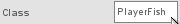

Torque 2D - Fish Game Tutorial - Part 2
2. Moving our Fish
|
|

Figure 2.1.2
This is all the work we can do in the Level
Builder before touching a little bit of script. Because of this ability
to link a class in the Level Builder, this next step is very easy.
Before
we exit, we want to make sure we save our level properly. That way when we load
it up, our fish is already placed with its class already set. Save the level as
"myFishlevel".
Open the directory where you created your project and then open the game/gameScripts folder. This is where your game scripts should be located. Presently, you should only see a game.cs file in this location. (.cs is the Torque Script file extension). In this folder we can create additional script files to build up our game; we will begin with movement. Create a text file in this folder and name it "player.cs". Be sure you add the .cs extension so T2D will recognize it as a script file. Now you can open your newly created player.cs in any text editing program. (At the least, Windows users can right-click and choose Open With to use either Notepad or Wordpad. Mac users can control-click and choose Open With to use TextEdit). If you remember, we set our fish's class to PlayerFish. So we are going to add the following function to our player.cs.
function PlayerFish::onLevelLoaded(%this, %scenegraph)
{
}
Code Sample 2.3.1
As you may notice, we start with the keyword function, which tells T2D that we are beginning a function declaration. Then we follow with our class name PlayerFish. This attaches our function to the PlayerFish class. Since our fish is using the PlayerFish class, our fish will now have access to this function. Then we get to the actual function name (onLevelLoaded), which you might have guessed gets called when our fish gets loaded into the level. After the function name, we have two comma separated values inside of parenthesis. These are values that will be passed to this function, and which could be useful. The %this value represents the object that this function is being called on. That value is useful when we have multiple objects using the same class. It represents the specific instance of the class calling this function. The %scenegraph value is useful as well, since it represents our level object. Everything in our level is inside of the scenegraph object. Here is a breakdown of what our function script means.
function PlayerFish::onLevelLoaded(%this, %scenegraph)
{
}
Now it's time to do something inside of the script. Since it gets called when our fish is loaded into our level, we can store this instance of our fish to be used in our key responses. Add this line in between the curly braces ({ }).
$FishPlayer = %this;
Code Sample 2.3.2
What this does is grab the instance we are loading and store it in the $FishPlayer variable. In Torque Script a "$" before text means it is a global variable, and a "%" before text means it is a local variable. A local variable (like %this) will only exist within the calling function. Once the function ends, the variable gets destroyed. Think of it as a temporary variable. On the other hand, a global variable will persist outside of the function, and can be accessed in any script or anywhere in the game.
Now that we have stored the fish object, which will represent our player, we need the commands to bind our keys for movement. We will use the w, s, a, and d keys, so we need to make four separate script lines. Add these lines after our "$FishPlayer = %this;" line.
moveMap.bindCmd(keyboard, "w", "fishPlayerUp();", "fishPlayerUpStop();"); moveMap.bindCmd(keyboard, "s", "fishPlayerDown();", "fishPlayerDownStop();"); moveMap.bindCmd(keyboard, "a", "fishPlayerLeft();", "fishPlayerLeftStop();"); moveMap.bindCmd(keyboard, "d", "fishPlayerRight();", "fishPlayerRightStop();");
Code Sample 2.3.3
There is already an object called moveMap, and this object is what handles our key events when running our level. We use a function called bindCmd on our moveMap, and we pass it a few values. First, we specify that we are binding a command to our keyboard. We then specify which key we are binding. After that, we specify what function to call when the key is pressed, and our final value is what function to call when the key is released. So, for example, we bind the keyboard key w and when we press it fishPlayerUp() is called. Then, when we release the key, fishPlayerUpStop() is called to stop our action.
Now when our fish gets loaded, it will be stored in $FishPlayer and the w, s, a, and d keys will get bound. Next we need to create the functions that are called when we press the keys.
We are now finished putting script lines inside of our onLevelLoaded() function, but we still need some others. As we create these new functions, be sure not to put one function inside another one accidentally. The following functions should be placed after the ending curly brace ( } ) of our onLevelLoaded function.
function fishPlayerUp()
{
$FishPlayer.setLinearVelocityY( -15 );
}
Code Sample 2.4.1
Here is our fishPlayerUp() function. As you can see, we reference the fish by the stored value in $FishPlayer and call setLinearVelocityY() on it. This function will basically set its Y direction speed. Since we are setting it negative, it will go upward (because screen coordinates start at X = 0, Y = 0 at the top left corner of the screen, numbers on the Y axis get lower as you go higher up). We now need to add the next three functions for movement.
function fishPlayerDown()
{
$FishPlayer.setLinearVelocityY( 15 );
}
function fishPlayerLeft()
{
$FishPlayer.setLinearVelocityX( -30 );
}
function fishPlayerRight()
{
$FishPlayer.setLinearVelocityX( 30 );
}
Code Sample 2.4.2
These functions basically do the same thing. The down function sets the Y
velocity as a positive value. The left and right functions set the X velocity
instead of the Y velocity, to move horizontally. We are nearly done. We now
need to add the stop functions. The stop functions are very similar to our
movement functions, they simply set the appropriate velocity to zero. So, add
these four functions.
function fishPlayerUpStop()
{
$FishPlayer.setLinearVelocityY( 0 );
}
function fishPlayerDownStop()
{
$FishPlayer.setLinearVelocityY( 0 );
}
function fishPlayerLeftStop()
{
$FishPlayer.setLinearVelocityX( 0 );
}
function fishPlayerRightStop()
{
$FishPlayer.setLinearVelocityX( 0 );
}
Code Sample 2.4.3
As you can see, the up and down functions set the Y velocity to zero and the left and right functions set the X velocity to zero. This will cause our fish to stop when the appropriate key is released.
Now your player.cs script file should look like this.
function PlayerFish::onLevelLoaded(%this, %scenegraph)
{
$FishPlayer = %this;
moveMap.bindCmd(keyboard, "w", "fishPlayerUp();", "fishPlayerUpStop();");
moveMap.bindCmd(keyboard, "s", "fishPlayerDown();", "fishPlayerDownStop();");
moveMap.bindCmd(keyboard, "a", "fishPlayerLeft();", "fishPlayerLeftStop();");
moveMap.bindCmd(keyboard, "d", "fishPlayerRight();", "fishPlayerRightStop();");
}
function fishPlayerUp()
{
$FishPlayer.setLinearVelocityY( -15 );
}
function fishPlayerDown()
{
$FishPlayer.setLinearVelocityY( 15 );
}
function fishPlayerLeft()
{
$FishPlayer.setLinearVelocityX( -30 );
}
function fishPlayerRight()
{
$FishPlayer.setLinearVelocityX( 30 );
}
function fishPlayerUpStop()
{
$FishPlayer.setLinearVelocityY( 0 );
}
function fishPlayerDownStop()
{
$FishPlayer.setLinearVelocityY( 0 );
}
function fishPlayerLeftStop()
{
$FishPlayer.setLinearVelocityX( 0 );
}
function fishPlayerRightStop()
{
$FishPlayer.setLinearVelocityX( 0 );
}
Code Sample 2.4.4
We are almost ready to test. We have one final step before we can move our fish around. The player.cs script file has all of the appropriate functions, but it isn't being referenced anywhere right now. Without referencing it, the program won't know to use the code inside it. T2D doesn't automatically reference every .cs file in your folders. This gives you complete control and you can choose whether or not you want a script file referenced. When T2D references a script file it will "exec" (short for execute) the file. So we need to add a proper exec command to reference the player.cs file we created. Exec "player.cs" from "game.cs".
So your modified game.cs file should look like this.
//---------------------------------------------------------------------------------------------
// Torque 2D
// Copyright (C) GarageGames.com, Inc.
//---------------------------------------------------------------------------------------------
//---------------------------------------------------------------------------------------------
// startGame
// All game logic should be set up here. This will be called by the level builder when you
// select "Run Game" or by the startup process of your game to load the first level.
//---------------------------------------------------------------------------------------------
function startGame(%level)
{
exec("./player.cs");
Canvas.setContent(mainScreenGui);
Canvas.setCursor(DefaultCursor);
new ActionMap(moveMap);
moveMap.push();
$enableDirectInput = true;
activateDirectInput();
enableJoystick();
sceneWindow2D.loadLevel(%level);
}
//---------------------------------------------------------------------------------------------
// endGame
// Game cleanup should be done here.
//---------------------------------------------------------------------------------------------
function endGame()
{
sceneWindow2D.endLevel();
moveMap.pop();
moveMap.delete();
}
Code Sample 2.5.3
This startGame() function gets called when we test our level in the T2D Level Builder. As you can see, we now reference the player.cs file so when T2D runs it will include it.
Now before we run T2D again we need to be sure we save our changes to these files. Now play your level!
You should see all of the tool bars and Level Builder menus disappear, leaving only our fish. Now, try pressing our movement keys (a, s, w, and d). You should see the fish being moved in the appropriate direction!Congratulations! You have your fish moving around based on your keys. You should be getting a beginning feel of T2D scripting. When you're ready, move on to Part 3 and our Fish game takes another step.